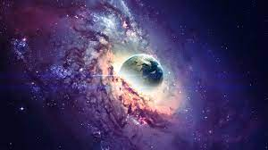

|
The history of space exploration can be traced back to ancient times when people observed and studied the stars and planets. However, the modern era of space exploration began in the mid-20th century with the launch of the first artificial satellite, Sputnik 1, by the Soviet Union in 1957. Following this, the space race between the United States and the Soviet Union intensified, with both countries launching a series of satellites, manned spacecraft, and robotic missions to explore and study space. In 1961, Yuri Gagarin became the first human to orbit the Earth, followed by Alan Shepard's suborbital flight in the same year. |
 |
n 1969, the United States achieved a major milestone in space exploration when the Apollo 11 mission successfully landed astronauts Neil Armstrong and Edwin "Buzz" Aldrin on the Moon. This marked the first time humans had set foot on another celestial body.
Over the next few decades, space exploration continued to advance with the launch of space stations such as Skylab and Mir, as well as a variety of robotic missions to study planets, asteroids, and comets. In 1998, the first components of the International Space Station (ISS) were launched, marking the beginning of a new era of international cooperation in space exploration.
Since then, space exploration has continued to advance with new technologies, spacecraft, and missions, including the Mars Exploration Rovers, the Cassini-Huygens mission to Saturn, and the New Horizons mission to Pluto. The private sector has also become increasingly involved in space exploration, with companies like SpaceX and Blue Origin developing reusable rockets and planning missions to colonize Mars.
Overall, the history of space exploration has been a fascinating journey of scientific discovery, technological innovation, and human achievement, and it continues to inspire new generations of scientists, engineers, and explorers.
The earliest recorded observations of the stars and planets date back thousands of years to ancient civilizations such as the Babylonians and Egyptians, who used the movements of the celestial bodies to develop calendars and predict natural phenomena. The ancient Greeks also made significant contributions to astronomy, with figures such as Pythagoras and Aristotle studying the heavens and developing theories about the structure of the universe.The development of the telescope in the early 17th century by figures such as Galileo Galilei and Johannes Kepler revolutionized our understanding of the cosmos. With the ability to observe the planets and stars in much greater detail, scientists were able to make significant discoveries about the nature of the universe.
| In the 20th century, space exploration became a major focus of scientific and political interest. The Soviet Union launched the first artificial satellite, Sputnik 1, into orbit in 1957, sparking the Space Race with the United States. In 1961, Soviet cosmonaut Yuri Gagarin became the first human to orbit the Earth, followed by American astronaut Alan Shepard's suborbital flight in the same year. The crowning achievement of the Space Race came in 1969, when American astronauts Neil Armstrong and Edwin "Buzz" Aldrin became the first humans to walk on the moon as part of the Apollo 11 mission. Over the following decades, a number of unmanned missions to the planets and beyond were launched, including the Voyager probes, which have now left our solar system. In recent years, space exploration has continued to advance, with a renewed focus on the commercialization of space travel and the development of new technologies such as reusable rockets and spacecraft. Private companies such as SpaceX and Blue Origin have made significant strides in this area, with the ultimate goal of making space travel more accessible and affordable for both scientists and tourists. |
 |